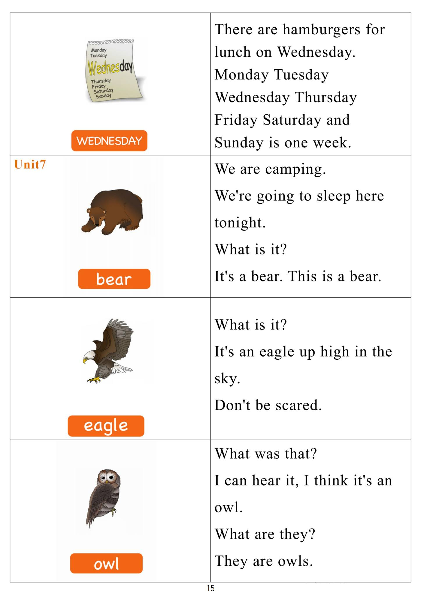

Day 14
Unit 5 · story
教材重点
网盘未提供逐日打卡原图；本级教材文件为“5.第五级单词卡.pdf”，以下重点结合单词卡与台词本整理，原文请看 Part 3。
Unit 5 · story · 7–8岁
can · look · fly · wow
Hello, hello, my name's Steve.
台词本为机器转写，可能存在识别误差；不等同于视频逐字原声。
详细内容
Part 1 核心词汇
必须掌握 · 4 个查看橙色每日打卡 Day 14 原图

Part 2 跟读句型与句型拓展
左侧保留台词本原句，右侧为替换练习；拓展内容不是视频逐字台词。
Hello, hello, my name's Steve.
Hello, hello, it's time to play. It's time to play in English.
Eyes is.
Nose, fingers and tongue go away. Show show, TA,
Oh, amazing.
Part 3 台词本全文
来源：第5级台词本 · 014.Wow!Orange - Unit 5 story_5_1a.pdf。以下保留网盘 PDF 的机器转写文本，仅清理了文件路径页眉和空行。
Hello, hello, my name's Steve.
Hello, hello, it's time to play. It's time to play in English.
Eyes is.
Nose, fingers and tongue go away. Show show, TA,
Oh, amazing.
Hey, stay.
Can you help me, please? Not now, maggie, I'm watching a great TV program about wild animals.
OK, then why let's have some fun with a little muggy magic?
Go away.
Ball.
That didn't taste good.
What happened My tongue.
Was really much longer and bigger than this. Hey, show me your tongue, hair.
Well, so what is it.
Eight a tongue, what is it Let me hear you. It's a tongue. What is it.
It's a tongue, what is it It's a tongue hat, well done.
Who look an elephant? Oh, that elephant has got.
Bigger ears than me, oh, wow, it must be fantastic.
To have really big ears, you can hear everything. Oh, hey, my ears are getting bigger.
Oh,
Oh, oh, that's better. Hey. My ears were really.
Big, show me your ears, make them bigger.
Hand bigger, and hey say with me, what are they They are ears, they are ears, they are ears, what are
they They are ears. They are ears. They are.
Is, what are they there is There is there are ears, yeah, oh, this is so crazy.
It must be Maggie Magic Hole, where is that naughty, naughty bird?
Ah, oh, look at that monkey, it's got really big eyes.
Oh, hey, look at my eyes, they're getting bigger.
I'm bigger.
And bigger, hey, what are they.
They are eyes, they are eyes, they are eyes, see with me, what are they.
/
-
/5/014.Wow!Orange - Unit 5 story_5_1a.txt[2022/3/29
星期二
6:51:49]
They are eyes, they are eyes, they are eyes, and again, what are they They are eyes, they are eyes, they
are eyes.
Oh, but hey, I can see.
Everything wow. And I can see Maggie.
Maggie, I can see you, oh, oh, maggie, my eyes, my eyes, oh,
Maggie, you naughty bird, sorry, steve, it's good fun, it's good fun for you, yeah?
Look, I'm not an elephant again.
My nose is getting bigger and bigger. Hey,
What is it.
It's a nose, it's a nose, it's a nose, say here with me, what is it It's a nose, it's a nose, it's a nose, and
again, what is it.
It's a nose, it's a nose, it's a nose, ho.
But hey, I can smell something nice. What can I smell a flower.
Oh sure.
No, no, no.
Help help, maggie, wow, you can fly so fast.
Maggie, I can't fly. Look, I've got arms, I've got hands and look, I've got.
Fingers, look, they are fingers, they are fingers, they are fingers, say it with me, what are they They are
fingers, they are fingers, they are.
Fingers, oh, maggie, I can't fly like you. I haven't got wings, OK?
A break.
Ooh.
I can fly, I can fly.
Oh, this is amazing. Wow.
One, one.
Maybe I can't touch anything because I haven't got any fingers. How can I eat.
Like me eat like you? Okay?